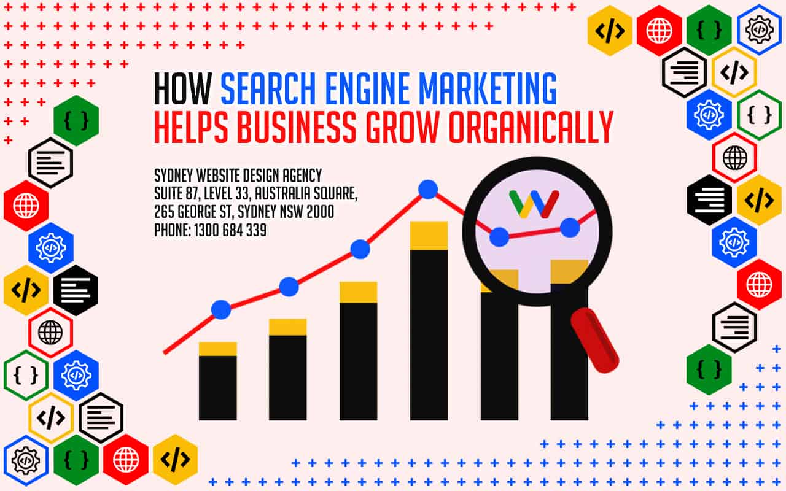

keyword research tools"Keyword research tools help identify high-performing search terms that your target audience frequently uses. Best SEO Agency Sydney Australia. By analyzing search volumes, competition levels, and user intent, these tools guide content creation and optimization strategies."
keyword targeting techniques"Keyword targeting techniques involve strategies for selecting and using the most effective keywords in your content. By applying these techniques, you improve search rankings, drive traffic, and increase conversions."
keyword variationsKeyword variations are different forms or related phrases of your target keyword. Best SEO Sydney Agency. Using synonyms and long-tail keywords naturally throughout your content helps capture a broader audience and improves the pages relevance to multiple search queries.
Keyword-rich anchor text"Keyword-rich anchor text includes target keywords within the clickable text of a backlink. When used appropriately, it can help signal relevance to search engines and improve rankings for those specific terms."
lazy loading images"Lazy loading images defers the loading of images until theyre visible on the users screen. This technique improves page speed, reduces initial load time, and ensures a smoother browsing experience for visitors."
Link bait strategies"Link bait strategies involve creating highly shareable, engaging content that naturally attracts backlinks. By focusing on unique insights, compelling visuals, or entertaining formats, you increase the likelihood of earning organic links."
Link building automation"Link building automation uses tools and software to streamline the process of acquiring backlinks. SEO Audit . While automation can save time, its crucial to focus on quality and relevance to maintain a natural link profile."
link building campaigns"Link building campaigns focus on acquiring high-quality, relevant backlinks to a website. These campaigns involve strategies such as guest blogging, influencer outreach, and creating shareable content that naturally attracts authoritative links, improving rankings and site authority."
Link building campaigns"Link building campaigns are organized efforts to acquire backlinks over a set period. These campaigns often include a mix of tacticssuch as content marketing, outreach, and guest postingto build a diverse and authoritative link profile."

Influencer outreach for links
Link building case studies"Link building case studies showcase real-world examples of successful backlink acquisition campaigns. comprehensive SEO Packages Sydney services. By reviewing these studies, you can learn from others experiences and apply tested strategies to your own link building efforts."
Link building case studies"Reviewing successful link building case studies helps you understand which strategies work best in different scenarios. These real-world examples provide insights into effective tactics, helping you refine your approach and achieve better results."
Link building for eCommerce"Link building for eCommerce involves acquiring backlinks that drive traffic and sales to online stores. By securing links from product reviews, industry blogs, and niche directories, you can improve search rankings and attract more customers."
Infographic link building
Link building for local businesses"Link building for local businesses emphasizes acquiring backlinks from community-focused websites, local directories, and regional industry partners. These links improve local search visibility, attract nearby customers, and build trust within the local community."
Link building for niche sites"Link building for niche sites involves targeting specialized sources, such as industry-specific blogs and forums, to acquire relevant backlinks.
SEO package Sydney - Search traffic growth
Search traffic growth
Organic search performance
By focusing on a narrow topic, you increase the likelihood of earning high-quality links that resonate with your audience."
Link building for personal blogs"Link building for personal blogs involves sharing your content with relevant communities, engaging in guest posting opportunities, and leveraging social media to attract backlinks. By consistently producing valuable content, you increase your chances of earning natural links over time."
informational keyword targeting
Link building for SaaS companies"Link building for SaaS companies focuses on acquiring backlinks that drive traffic, increase brand visibility, and improve rankings in a highly competitive industry.
SEO package Sydney - Organic search performance
Google structured data
Organic ranking improvements
Strategies often include publishing technical guides, collaborating with industry experts, and promoting case studies."
Link building for small businesses"Link building for small businesses focuses on acquiring backlinks from local directories, community organizations, and industry-specific resources. These efforts help small businesses compete in local search results and build their online reputation."
Link building for startups"Link building for startups focuses on acquiring high-quality backlinks early in the companys growth. By targeting relevant blogs, niche directories, and industry influencers, startups can improve their online presence and compete with more established brands."
informational keywords
Link building KPIs"Link building KPIs (Key Performance Indicators) measure the success of your link acquisition efforts. Common KPIs include the number of acquired links, domain authority improvements, referral traffic, and keyword ranking gains."
Link building KPIs"Key performance indicators (KPIs) for link building include the number of backlinks acquired, improvements in domain authority, increases in organic traffic, and keyword ranking gains. Tracking these KPIs helps measure the success of your link building campaigns."
Link building myths"Link building myths include misconceptions about how backlinks impact rankings or the strategies needed to acquire them. By dispelling these myths, you can focus on proven techniques and avoid common pitfalls in your link building efforts."
About Web directory
Online list or catalog of Wide sites
A web directory or link directory is an online list or catalog of websites. That is, it is a directory on the World Wide Web of (all or part of) the World Wide Web. Historically, directories typically listed entries on people or businesses, and their contact information; such directories are still in use today. A web directory includes entries about websites, including links to those websites, organized into categories and subcategories.[1][2][3] Besides a link, each entry may include the title of the website, and a description of its contents. In most web directories, the entries are about whole websites, rather than individual pages within them (called "deep links"). Websites are often limited to inclusion in only a few categories.
There are two ways to find information on the Web: by searching or browsing. Web directories provide links in a structured list to make browsing easier. Many web directories combine searching and browsing by providing a search engine to search the directory. Unlike search engines, which base results on a database of entries gathered automatically by web crawler, most web directories are built manually by human editors. Many web directories allow site owners to submit their site for inclusion, and have editors review submissions for fitness.
Web directories may be general in scope, or limited to particular subjects or fields. Entries may be listed for free, or by paid submission (meaning the site owner must pay to have his or her website listed).
RSS directories are similar to web directories, but contain collections of RSS feeds, instead of links to websites.
During the early development of the web, there was a list of web servers edited by Tim Berners-Lee and hosted on the CERN webserver. One historical snapshot from 1992 remains.[4] He also created the World Wide Web Virtual Library, which is the oldest web directory.[5]
Most of the directories are general in on scope and list websites across a wide range of categories, regions and languages. But some niche directories focus on restricted regions, single languages, or specialist sectors. For example, there are shopping directories that specialize in the listing of retail e-commerce sites.
Examples of well-known general web directories are Yahoo! Directory (shut down at the end of 2014) and DMOZ (shut down on March 14, 2017). DMOZ was significant due to its extensive categorization and large number of listings and its free availability for use by other directories and search engines.[6]
However, a debate over the quality of directories and databases still continues, as search engines use DMOZ's content without real integration, and some experiment using clustering.
There have been many attempts to make building web directories easier, such as using automated submission of related links by script, or any number of available PHP portals and programs. Recently, social software techniques have spawned new efforts of categorization, with Amazon.com adding tagging to their product pages.
Directories have various features in their listings, often depending upon the price paid for inclusion:
Cost
Free submission – there is no charge for the review and listing of the site
Paid submission – a one-time or recurring fee is charged for reviewing/listing the submitted link
No follow – there is a rel="nofollow" attribute associated with the link, meaning search engines will give no weight to the link
Featured listing – the link is given a premium position in a category (or multiple categories) or other sections of the directory, such as the homepage. Sometimes called sponsored listing.
Bid for position – where sites are ordered based on bids
Affiliate links – where the directory earns commission for referred customers from the listed websites
Reciprocity
Reciprocal link – a link back to the directory must be added somewhere on the submitted site in order to get listed in the directory. This strategy has decreased in popularity due to changes in SEO algorithms which can make it less valuable or counterproductive.[7]
No Reciprocal link – a web directory where you will submit your links for free and no need to add link back to your website
A human-edited directory is created and maintained by editors who add links based on the policies particular to that directory. Human-edited directories are often targeted by SEOs on the basis that links from reputable sources will improve rankings in the major search engines. Some directories may prevent search engines from rating a displayed link by using redirects, nofollow attributes, or other techniques. Many human-edited directories, including DMOZ, World Wide Web Virtual Library, Business.com and Jasmine Directory, are edited by volunteers, who are often experts in particular categories. These directories are sometimes criticized due to long delays in approving submissions, or for rigid organizational structures and disputes among volunteer editors.
In response to these criticisms, some volunteer-edited directories have adopted wiki technology, to allow broader community participation in editing the directory (at the risk of introducing lower-quality, less objective entries).
Another direction taken by some web directories is the paid for inclusion model. This method enables the directory to offer timely inclusion for submissions and generally fewer listings as a result of the paid model. They often offer additional listing options to further enhance listings, including features listings and additional links to inner pages of the listed website. These options typically have an additional fee associated but offer significant help and visibility to sites and/or their inside pages.
Today submission of websites to web directories is considered a common SEO (search engine optimization) technique to get back-links for the submitted website. One distinctive feature of 'directory submission' is that it cannot be fully automated like search engine submissions. Manual directory submission is a tedious and time-consuming job and is often outsourced by webmasters.
Bid for Position directories, also known as bidding web directories, are paid-for-inclusion web directories where the listings of websites in the directory are ordered according to their bid amount. They are special in that the more a person pays, the higher up the list of websites in the directory they go. With the higher listing, the website becomes more visible and increases the chances that visitors who browse the directory will click on the listing.
Web directories will often make themselves accessing by more and more URLs by acquiring the domain registrations of defunct websites as soon as they expire, a practice known as Domain drop catching.
^Schmitz, Tom (August 2, 2012). "What Everyone Needs To Know About Good, Bad & Bland Links". searchengineland.com. Third Door Media. Retrieved April 21, 2017. Reciprocal links may not help with competitive keyword rankings, but that does not mean you should avoid them when they make sound business sense. What you should definitely avoid are manipulative reciprocal linking schemes like automated link trading programs and three-way links or four-way links.
Software which systematically browses the World Wide Web
This article is about the internet bot. For the search engine, see WebCrawler."Web spider" redirects here; not to be confused with Spider web."Spiderbot" redirects here. For the video game, see Arac (video game).
Architecture of a Web crawler
A Web crawler, sometimes called a spider or spiderbot and often shortened to crawler, is an Internet bot that systematically browses the World Wide Web and that is typically operated by search engines for the purpose of Web indexing (web spidering).[1]
Web search engines and some other websites use Web crawling or spidering software to update their web content or indices of other sites' web content. Web crawlers copy pages for processing by a search engine, which indexes the downloaded pages so that users can search more efficiently.
Crawlers consume resources on visited systems and often visit sites unprompted. Issues of schedule, load, and "politeness" come into play when large collections of pages are accessed. Mechanisms exist for public sites not wishing to be crawled to make this known to the crawling agent. For example, including a robots.txt file can request bots to index only parts of a website, or nothing at all.
The number of Internet pages is extremely large; even the largest crawlers fall short of making a complete index. For this reason, search engines struggled to give relevant search results in the early years of the World Wide Web, before 2000. Today, relevant results are given almost instantly.
A Web crawler starts with a list of URLs to visit. Those first URLs are called the seeds. As the crawler visits these URLs, by communicating with web servers that respond to those URLs, it identifies all the hyperlinks in the retrieved web pages and adds them to the list of URLs to visit, called the crawl frontier. URLs from the frontier are recursively visited according to a set of policies. If the crawler is performing archiving of websites (or web archiving), it copies and saves the information as it goes. The archives are usually stored in such a way they can be viewed, read and navigated as if they were on the live web, but are preserved as 'snapshots'.[5]
The archive is known as the repository and is designed to store and manage the collection of web pages. The repository only stores HTML pages and these pages are stored as distinct files. A repository is similar to any other system that stores data, like a modern-day database. The only difference is that a repository does not need all the functionality offered by a database system. The repository stores the most recent version of the web page retrieved by the crawler.[citation needed]
The large volume implies the crawler can only download a limited number of the Web pages within a given time, so it needs to prioritize its downloads. The high rate of change can imply the pages might have already been updated or even deleted.
The number of possible URLs crawled being generated by server-side software has also made it difficult for web crawlers to avoid retrieving duplicate content. Endless combinations of HTTP GET (URL-based) parameters exist, of which only a small selection will actually return unique content. For example, a simple online photo gallery may offer three options to users, as specified through HTTP GET parameters in the URL. If there exist four ways to sort images, three choices of thumbnail size, two file formats, and an option to disable user-provided content, then the same set of content can be accessed with 48 different URLs, all of which may be linked on the site. This mathematical combination creates a problem for crawlers, as they must sort through endless combinations of relatively minor scripted changes in order to retrieve unique content.
As Edwards et al. noted, "Given that the bandwidth for conducting crawls is neither infinite nor free, it is becoming essential to crawl the Web in not only a scalable, but efficient way, if some reasonable measure of quality or freshness is to be maintained."[6] A crawler must carefully choose at each step which pages to visit next.
Given the current size of the Web, even large search engines cover only a portion of the publicly available part. A 2009 study showed even large-scale search engines index no more than 40–70% of the indexable Web;[8] a previous study by Steve Lawrence and Lee Giles showed that no search engine indexed more than 16% of the Web in 1999.[9] As a crawler always downloads just a fraction of the Web pages, it is highly desirable for the downloaded fraction to contain the most relevant pages and not just a random sample of the Web.
This requires a metric of importance for prioritizing Web pages. The importance of a page is a function of its intrinsic quality, its popularity in terms of links or visits, and even of its URL (the latter is the case of vertical search engines restricted to a single top-level domain, or search engines restricted to a fixed Web site). Designing a good selection policy has an added difficulty: it must work with partial information, as the complete set of Web pages is not known during crawling.
Junghoo Cho et al. made the first study on policies for crawling scheduling. Their data set was a 180,000-pages crawl from the stanford.edu domain, in which a crawling simulation was done with different strategies.[10] The ordering metrics tested were breadth-first, backlink count and partial PageRank calculations. One of the conclusions was that if the crawler wants to download pages with high Pagerank early during the crawling process, then the partial Pagerank strategy is the better, followed by breadth-first and backlink-count. However, these results are for just a single domain. Cho also wrote his PhD dissertation at Stanford on web crawling.[11]
Najork and Wiener performed an actual crawl on 328 million pages, using breadth-first ordering.[12] They found that a breadth-first crawl captures pages with high Pagerank early in the crawl (but they did not compare this strategy against other strategies). The explanation given by the authors for this result is that "the most important pages have many links to them from numerous hosts, and those links will be found early, regardless of on which host or page the crawl originates."
Abiteboul designed a crawling strategy based on an algorithm called OPIC (On-line Page Importance Computation).[13] In OPIC, each page is given an initial sum of "cash" that is distributed equally among the pages it points to. It is similar to a PageRank computation, but it is faster and is only done in one step. An OPIC-driven crawler downloads first the pages in the crawling frontier with higher amounts of "cash". Experiments were carried in a 100,000-pages synthetic graph with a power-law distribution of in-links. However, there was no comparison with other strategies nor experiments in the real Web.
Boldi et al. used simulation on subsets of the Web of 40 million pages from the .it domain and 100 million pages from the WebBase crawl, testing breadth-first against depth-first, random ordering and an omniscient strategy. The comparison was based on how well PageRank computed on a partial crawl approximates the true PageRank value. Some visits that accumulate PageRank very quickly (most notably, breadth-first and the omniscient visit) provide very poor progressive approximations.[14][15]
Baeza-Yates et al. used simulation on two subsets of the Web of 3 million pages from the .gr and .cl domain, testing several crawling strategies.[16] They showed that both the OPIC strategy and a strategy that uses the length of the per-site queues are better than breadth-first crawling, and that it is also very effective to use a previous crawl, when it is available, to guide the current one.
Daneshpajouh et al. designed a community based algorithm for discovering good seeds.[17] Their method crawls web pages with high PageRank from different communities in less iteration in comparison with crawl starting from random seeds. One can extract good seed from a previously-crawled-Web graph using this new method. Using these seeds, a new crawl can be very effective.
A crawler may only want to seek out HTML pages and avoid all other MIME types. In order to request only HTML resources, a crawler may make an HTTP HEAD request to determine a Web resource's MIME type before requesting the entire resource with a GET request. To avoid making numerous HEAD requests, a crawler may examine the URL and only request a resource if the URL ends with certain characters such as .html, .htm, .asp, .aspx, .php, .jsp, .jspx or a slash. This strategy may cause numerous HTML Web resources to be unintentionally skipped.
Some crawlers may also avoid requesting any resources that have a "?" in them (are dynamically produced) in order to avoid spider traps that may cause the crawler to download an infinite number of URLs from a Web site. This strategy is unreliable if the site uses URL rewriting to simplify its URLs.
Crawlers usually perform some type of URL normalization in order to avoid crawling the same resource more than once. The term URL normalization, also called URL canonicalization, refers to the process of modifying and standardizing a URL in a consistent manner. There are several types of normalization that may be performed including conversion of URLs to lowercase, removal of "." and ".." segments, and adding trailing slashes to the non-empty path component.[18]
Some crawlers intend to download/upload as many resources as possible from a particular web site. So path-ascending crawler was introduced that would ascend to every path in each URL that it intends to crawl.[19] For example, when given a seed URL of http://llama.org/hamster/monkey/page.html, it will attempt to crawl /hamster/monkey/, /hamster/, and /. Cothey found that a path-ascending crawler was very effective in finding isolated resources, or resources for which no inbound link would have been found in regular crawling.
The importance of a page for a crawler can also be expressed as a function of the similarity of a page to a given query. Web crawlers that attempt to download pages that are similar to each other are called focused crawler or topical crawlers. The concepts of topical and focused crawling were first introduced by Filippo Menczer[20][21] and by Soumen Chakrabarti et al.[22]
The main problem in focused crawling is that in the context of a Web crawler, we would like to be able to predict the similarity of the text of a given page to the query before actually downloading the page. A possible predictor is the anchor text of links; this was the approach taken by Pinkerton[23] in the first web crawler of the early days of the Web. Diligenti et al.[24] propose using the complete content of the pages already visited to infer the similarity between the driving query and the pages that have not been visited yet. The performance of a focused crawling depends mostly on the richness of links in the specific topic being searched, and a focused crawling usually relies on a general Web search engine for providing starting points.
An example of the focused crawlers are academic crawlers, which crawls free-access academic related documents, such as the citeseerxbot, which is the crawler of CiteSeerX search engine. Other academic search engines are Google Scholar and Microsoft Academic Search etc. Because most academic papers are published in PDF formats, such kind of crawler is particularly interested in crawling PDF, PostScript files, Microsoft Word including their zipped formats. Because of this, general open-source crawlers, such as Heritrix, must be customized to filter out other MIME types, or a middleware is used to extract these documents out and import them to the focused crawl database and repository.[25] Identifying whether these documents are academic or not is challenging and can add a significant overhead to the crawling process, so this is performed as a post crawling process using machine learning or regular expression algorithms. These academic documents are usually obtained from home pages of faculties and students or from publication page of research institutes. Because academic documents make up only a small fraction of all web pages, a good seed selection is important in boosting the efficiencies of these web crawlers.[26] Other academic crawlers may download plain text and HTML files, that contains metadata of academic papers, such as titles, papers, and abstracts. This increases the overall number of papers, but a significant fraction may not provide free PDF downloads.
Another type of focused crawlers is semantic focused crawler, which makes use of domain ontologies to represent topical maps and link Web pages with relevant ontological concepts for the selection and categorization purposes.[27] In addition, ontologies can be automatically updated in the crawling process. Dong et al.[28] introduced such an ontology-learning-based crawler using a support-vector machine to update the content of ontological concepts when crawling Web pages.
The Web has a very dynamic nature, and crawling a fraction of the Web can take weeks or months. By the time a Web crawler has finished its crawl, many events could have happened, including creations, updates, and deletions.
From the search engine's point of view, there is a cost associated with not detecting an event, and thus having an outdated copy of a resource. The most-used cost functions are freshness and age.[29]
Freshness: This is a binary measure that indicates whether the local copy is accurate or not. The freshness of a page p in the repository at time t is defined as:
Age: This is a measure that indicates how outdated the local copy is. The age of a page p in the repository, at time t is defined as:
Coffmanet al. worked with a definition of the objective of a Web crawler that is equivalent to freshness, but use a different wording: they propose that a crawler must minimize the fraction of time pages remain outdated. They also noted that the problem of Web crawling can be modeled as a multiple-queue, single-server polling system, on which the Web crawler is the server and the Web sites are the queues. Page modifications are the arrival of the customers, and switch-over times are the interval between page accesses to a single Web site. Under this model, mean waiting time for a customer in the polling system is equivalent to the average age for the Web crawler.[30]
The objective of the crawler is to keep the average freshness of pages in its collection as high as possible, or to keep the average age of pages as low as possible. These objectives are not equivalent: in the first case, the crawler is just concerned with how many pages are outdated, while in the second case, the crawler is concerned with how old the local copies of pages are.
Evolution of Freshness and Age in a web crawler
Two simple re-visiting policies were studied by Cho and Garcia-Molina:[31]
Uniform policy: This involves re-visiting all pages in the collection with the same frequency, regardless of their rates of change.
Proportional policy: This involves re-visiting more often the pages that change more frequently. The visiting frequency is directly proportional to the (estimated) change frequency.
In both cases, the repeated crawling order of pages can be done either in a random or a fixed order.
Cho and Garcia-Molina proved the surprising result that, in terms of average freshness, the uniform policy outperforms the proportional policy in both a simulated Web and a real Web crawl. Intuitively, the reasoning is that, as web crawlers have a limit to how many pages they can crawl in a given time frame, (1) they will allocate too many new crawls to rapidly changing pages at the expense of less frequently updating pages, and (2) the freshness of rapidly changing pages lasts for shorter period than that of less frequently changing pages. In other words, a proportional policy allocates more resources to crawling frequently updating pages, but experiences less overall freshness time from them.
To improve freshness, the crawler should penalize the elements that change too often.[32] The optimal re-visiting policy is neither the uniform policy nor the proportional policy. The optimal method for keeping average freshness high includes ignoring the pages that change too often, and the optimal for keeping average age low is to use access frequencies that monotonically (and sub-linearly) increase with the rate of change of each page. In both cases, the optimal is closer to the uniform policy than to the proportional policy: as Coffmanet al. note, "in order to minimize the expected obsolescence time, the accesses to any particular page should be kept as evenly spaced as possible".[30] Explicit formulas for the re-visit policy are not attainable in general, but they are obtained numerically, as they depend on the distribution of page changes. Cho and Garcia-Molina show that the exponential distribution is a good fit for describing page changes,[32] while Ipeirotiset al. show how to use statistical tools to discover parameters that affect this distribution.[33] The re-visiting policies considered here regard all pages as homogeneous in terms of quality ("all pages on the Web are worth the same"), something that is not a realistic scenario, so further information about the Web page quality should be included to achieve a better crawling policy.
Crawlers can retrieve data much quicker and in greater depth than human searchers, so they can have a crippling impact on the performance of a site. If a single crawler is performing multiple requests per second and/or downloading large files, a server can have a hard time keeping up with requests from multiple crawlers.
As noted by Koster, the use of Web crawlers is useful for a number of tasks, but comes with a price for the general community.[34] The costs of using Web crawlers include:
network resources, as crawlers require considerable bandwidth and operate with a high degree of parallelism during a long period of time;
server overload, especially if the frequency of accesses to a given server is too high;
poorly written crawlers, which can crash servers or routers, or which download pages they cannot handle; and
personal crawlers that, if deployed by too many users, can disrupt networks and Web servers.
A partial solution to these problems is the robots exclusion protocol, also known as the robots.txt protocol that is a standard for administrators to indicate which parts of their Web servers should not be accessed by crawlers.[35] This standard does not include a suggestion for the interval of visits to the same server, even though this interval is the most effective way of avoiding server overload. Recently commercial search engines like Google, Ask Jeeves, MSN and Yahoo! Search are able to use an extra "Crawl-delay:" parameter in the robots.txt file to indicate the number of seconds to delay between requests.
The first proposed interval between successive pageloads was 60 seconds.[36] However, if pages were downloaded at this rate from a website with more than 100,000 pages over a perfect connection with zero latency and infinite bandwidth, it would take more than 2 months to download only that entire Web site; also, only a fraction of the resources from that Web server would be used.
Cho uses 10 seconds as an interval for accesses,[31] and the WIRE crawler uses 15 seconds as the default.[37] The MercatorWeb crawler follows an adaptive politeness policy: if it took t seconds to download a document from a given server, the crawler waits for 10t seconds before downloading the next page.[38] Dill et al. use 1 second.[39]
For those using Web crawlers for research purposes, a more detailed cost-benefit analysis is needed and ethical considerations should be taken into account when deciding where to crawl and how fast to crawl.[40]
Anecdotal evidence from access logs shows that access intervals from known crawlers vary between 20 seconds and 3–4 minutes. It is worth noticing that even when being very polite, and taking all the safeguards to avoid overloading Web servers, some complaints from Web server administrators are received. Sergey Brin and Larry Page noted in 1998, "... running a crawler which connects to more than half a million servers ... generates a fair amount of e-mail and phone calls. Because of the vast number of people coming on line, there are always those who do not know what a crawler is, because this is the first one they have seen."[41]
A parallel crawler is a crawler that runs multiple processes in parallel. The goal is to maximize the download rate while minimizing the overhead from parallelization and to avoid repeated downloads of the same page. To avoid downloading the same page more than once, the crawling system requires a policy for assigning the new URLs discovered during the crawling process, as the same URL can be found by two different crawling processes.
While it is fairly easy to build a slow crawler that downloads a few pages per second for a short period of time, building a high-performance system that can download hundreds of millions of pages over several weeks presents a number of challenges in system design, I/O and network efficiency, and robustness and manageability.
Web crawlers are a central part of search engines, and details on their algorithms and architecture are kept as business secrets. When crawler designs are published, there is often an important lack of detail that prevents others from reproducing the work. There are also emerging concerns about "search engine spamming", which prevent major search engines from publishing their ranking algorithms.
While most of the website owners are keen to have their pages indexed as broadly as possible to have strong presence in search engines, web crawling can also have unintended consequences and lead to a compromise or data breach if a search engine indexes resources that should not be publicly available, or pages revealing potentially vulnerable versions of software.
Apart from standard web application security recommendations website owners can reduce their exposure to opportunistic hacking by only allowing search engines to index the public parts of their websites (with robots.txt) and explicitly blocking them from indexing transactional parts (login pages, private pages, etc.).
Web crawlers typically identify themselves to a Web server by using the User-agent field of an HTTP request. Web site administrators typically examine their Web servers' log and use the user agent field to determine which crawlers have visited the web server and how often. The user agent field may include a URL where the Web site administrator may find out more information about the crawler. Examining Web server log is tedious task, and therefore some administrators use tools to identify, track and verify Web crawlers. Spambots and other malicious Web crawlers are unlikely to place identifying information in the user agent field, or they may mask their identity as a browser or other well-known crawler.
Web site administrators prefer Web crawlers to identify themselves so that they can contact the owner if needed. In some cases, crawlers may be accidentally trapped in a crawler trap or they may be overloading a Web server with requests, and the owner needs to stop the crawler. Identification is also useful for administrators that are interested in knowing when they may expect their Web pages to be indexed by a particular search engine.
A vast amount of web pages lie in the deep or invisible web.[43] These pages are typically only accessible by submitting queries to a database, and regular crawlers are unable to find these pages if there are no links that point to them. Google's Sitemaps protocol and mod oai[44] are intended to allow discovery of these deep-Web resources.
Deep web crawling also multiplies the number of web links to be crawled. Some crawlers only take some of the URLs in <a href="URL"> form. In some cases, such as the Googlebot, Web crawling is done on all text contained inside the hypertext content, tags, or text.
Strategic approaches may be taken to target deep Web content. With a technique called screen scraping, specialized software may be customized to automatically and repeatedly query a given Web form with the intention of aggregating the resulting data. Such software can be used to span multiple Web forms across multiple Websites. Data extracted from the results of one Web form submission can be taken and applied as input to another Web form thus establishing continuity across the Deep Web in a way not possible with traditional web crawlers.[45]
Pages built on AJAX are among those causing problems to web crawlers. Google has proposed a format of AJAX calls that their bot can recognize and index.[46]
There are a number of "visual web scraper/crawler" products available on the web which will crawl pages and structure data into columns and rows based on the users requirements. One of the main difference between a classic and a visual crawler is the level of programming ability required to set up a crawler. The latest generation of "visual scrapers" remove the majority of the programming skill needed to be able to program and start a crawl to scrape web data.
The visual scraping/crawling method relies on the user "teaching" a piece of crawler technology, which then follows patterns in semi-structured data sources. The dominant method for teaching a visual crawler is by highlighting data in a browser and training columns and rows. While the technology is not new, for example it was the basis of Needlebase which has been bought by Google (as part of a larger acquisition of ITA Labs[47]), there is continued growth and investment in this area by investors and end-users.[citation needed]
The following is a list of published crawler architectures for general-purpose crawlers (excluding focused web crawlers), with a brief description that includes the names given to the different components and outstanding features:
Googlebot is described in some detail, but the reference is only about an early version of its architecture, which was written in C++ and Python. The crawler was integrated with the indexing process, because text parsing was done for full-text indexing and also for URL extraction. There is a URL server that sends lists of URLs to be fetched by several crawling processes. During parsing, the URLs found were passed to a URL server that checked if the URL have been previously seen. If not, the URL was added to the queue of the URL server.
WebCrawler was used to build the first publicly available full-text index of a subset of the Web. It was based on lib-WWW to download pages, and another program to parse and order URLs for breadth-first exploration of the Web graph. It also included a real-time crawler that followed links based on the similarity of the anchor text with the provided query.
WebFountain is a distributed, modular crawler similar to Mercator but written in C++.
Xenon is a web crawler used by government tax authorities to detect fraud.[49][50]
Grub was an open source distributed search crawler that Wikia Search used to crawl the web.
Heritrix is the Internet Archive's archival-quality crawler, designed for archiving periodic snapshots of a large portion of the Web. It was written in Java.
ht://Dig includes a Web crawler in its indexing engine.
HTTrack uses a Web crawler to create a mirror of a web site for off-line viewing. It is written in C and released under the GPL.
^Castillo, Carlos (2004). Effective Web Crawling (PhD thesis). University of Chile. Retrieved 3 August 2010.
^Gulls, A.; A. Signori (2005). "The indexable web is more than 11.5 billion pages". Special interest tracks and posters of the 14th international conference on World Wide Web. ACM Press. pp. 902–903. doi:10.1145/1062745.1062789.
^Pant, Gautam; Srinivasan, Padmini; Menczer, Filippo (2004). "Crawling the Web"(PDF). In Levene, Mark; Poulovassilis, Alexandra (eds.). Web Dynamics: Adapting to Change in Content, Size, Topology and Use. Springer. pp. 153–178. ISBN978-3-540-40676-1. Archived from the original(PDF) on 20 March 2009. Retrieved 9 May 2006.
^Diligenti, M., Coetzee, F., Lawrence, S., Giles, C. L., and Gori, M. (2000). Focused crawling using context graphs. In Proceedings of 26th International Conference on Very Large Databases (VLDB), pages 527-534, Cairo, Egypt.
^Wu, Jian; Teregowda, Pradeep; Khabsa, Madian; Carman, Stephen; Jordan, Douglas; San Pedro Wandelmer, Jose; Lu, Xin; Mitra, Prasenjit; Giles, C. Lee (2012). "Web crawler middleware for search engine digital libraries". Proceedings of the twelfth international workshop on Web information and data management - WIDM '12. p. 57. doi:10.1145/2389936.2389949. ISBN9781450317207. S2CID18513666.
^Wu, Jian; Teregowda, Pradeep; Ramírez, Juan Pablo Fernández; Mitra, Prasenjit; Zheng, Shuyi; Giles, C. Lee (2012). "The evolution of a crawling strategy for an academic document search engine". Proceedings of the 3rd Annual ACM Web Science Conference on - Web Sci '12. pp. 340–343. doi:10.1145/2380718.2380762. ISBN9781450312288. S2CID16718130.
^Michael L Nelson; Herbert Van de Sompel; Xiaoming Liu; Terry L Harrison; Nathan McFarland (24 March 2005). "mod_oai: An Apache Module for Metadata Harvesting": cs/0503069. arXiv:cs/0503069. Bibcode:2005cs........3069N. cite journal: Cite journal requires |journal= (help)
A content agency in Sydney focuses on creating high-quality, SEO-optimized content that resonates with your target audience. Their services typically include blog writing, website copy, video production, and other forms of media designed to attract traffic and improve search rankings.
Why should I consider SEO packages in Australia?
SEO packages in Australia typically bundle essential optimization services such as keyword research, technical audits, content creation, and link building at a set price. They are designed to simplify the process, provide consistent results, and help businesses of all sizes improve their online visibility.
What is involved in SEO consulting?
SEO consulting involves analyzing a website's current performance, identifying areas for improvement, and recommending strategies to boost search rankings. Consultants provide insights on keyword selection, on-page and technical optimization, content development, and link-building tactics.
What are the benefits of working with an SEO consultant in Sydney?
An SEO consultant in Sydney can provide tailored advice and strategies that align with your business's goals and local market conditions. They bring expertise in keyword selection, content optimization, technical SEO, and performance monitoring, helping you achieve better search rankings and more organic traffic.
What role do SEO consultants play in a digital marketing strategy?
SEO consultants are responsible for improving your website's visibility and performance in search engines. By analyzing data, refining keyword strategies, and optimizing site elements, they enhance your overall digital marketing efforts, leading to more traffic, better user engagement, and higher conversions.